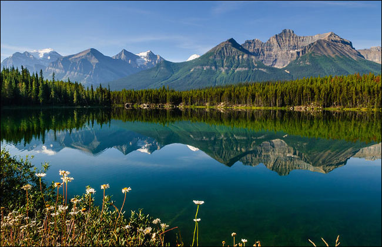

CANADA
-

Banff National Park - Alberta
The crisp waters and surreal mountain ranges of Banff National Park within the Rocky Mountains are neighbored by Jasper National Park, Yoho National Park, and Kootenay National Park. This region is brimming with local wildlife: rainbow trout, grizzly bears, moose, wolves, etc.
-

Niagara Falls - Border of Ontario and New York
Niagara Falls lies between the international border of Ontario and New York, and is composed of 3 water falls (Bridal Veil, American, and Horseshoe Falls).
-
Parliament Hill - Ottawa
This attraction is the most frequently visited in Ottawa and is the seat of Canada's federal government. A jaw dropping sound and light show accompanied with lighting effects and projected images are done each evening for the public to witness.
-

Fairmont Le Château Frontenac - Quebec
A historic five-star hotel that was built by the Canadian Pacific Railway and designed by the American architect Bruce Price (its construction was completed in 1893).
-
Prince Albert National Park - Saskatchewan
Located in central Saskatchewan, this region contains wildlife such as elk, moose, red foxes, bison, wolves, etc. It contains three large lakes with top notch water quality and marine wildlife populations.
-
CN Tower - Toronto
This communications and observation tower are loated in Downtown Toronto, Ontario and stands at an amazing 1,815.3 feet tall. The CN Tower has a three-sixty restaurant and standing glass floor as some of its additional features.